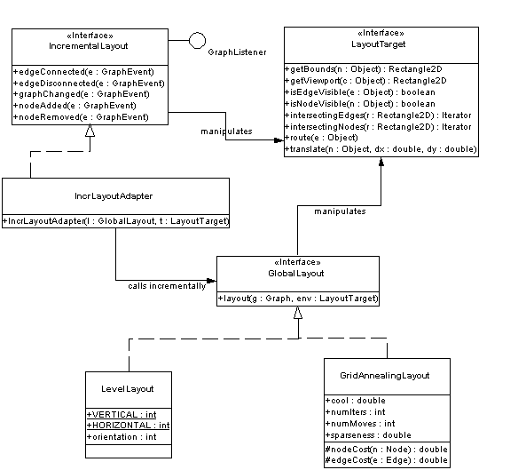

The Diva graph layout package provides an assortment of node layout and edge routing facilities for the graph model package. It is designed to operate independently of any particular display implementation, so any graph layout/edge routing algorithm written using the conventions established in this package should be applicable to any display implementation that obeys a few assumptions about the graph display (e.g. that nodes have bounding boxes, edges have endpoints, etc.). The package's architecture supports the following features:
This section provides the UML diagram of the layout package. It then explains the LayoutTarget interface and distinguishes the two types of layout (global vs. incremental).
|
 |
A fundamental aspect of the graph package design is that we want a graph model to be shared among multiple views, each of which might contain a different geometric configuration for the nodes and edges. As a result of this design, the graph model (on which layout algorithms operate) contains no information about display geometry. (This also makes sense in terms of MVC because the "model" should have no knowledge of the "view). However by this design, layout algorithms must have a dependence on the display code, meaning that without some special interface between layout and view, layout algorithms are tied to the implementation of the display. The LayoutTarget interface defines a contract that the display code has to satisfy in order to support the algorithms in the layout package. It decouples the layout and display so that any display implementation that satisfies this interface may be operated on by the layout algorithms.
Global layout algorithms operate on an entire graph at once, trying to maximize the layout quality of the graph. In contrast, incremental layout algorithms operate on changes to the graph structure and attempts to maximize the layout quality of the graph and minimize the impact on the layout of the pieces of the graph not directly effected by that change. So another way to phrase it is that incremental layout algorithms respect the previous layout of the graph, while global layout algorithms do not. Given these differences, it makes sense that the two types of algorithms have different interfaces.
In these interfaces it is clear that global layout algorithms are applied to the entirety of a graph and need not maintain state, while incremental layout algorithms must maintain state, and respond to changes in the graph structure by implementing the GraphListener interface. It is also possible to implement global layout in terms of incremental layout, and vice versa, though it is not clear how useful either of these constructions is. A class which implements global layout in terms of local layout could do so be simply calling the incremental layout's graphChanged() method for each layout call. A class which implements incremental layout in terms of global layout could do so by simply calling the global layout's layout() method for each change in the graph. While the former construction might be appropriate, it is likely that the second construction would defeat the point of incremental layout by throwing away all the useful delta information.